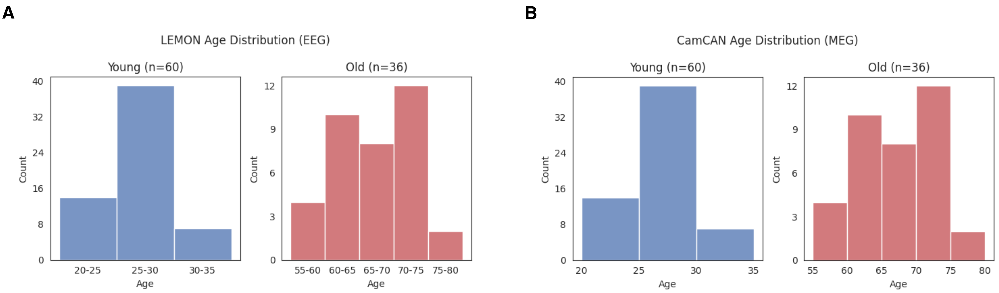

Abstract. Background Aging is a significant risk factor for many neuropsychiatric disorders. To properly assess the impact of these conditions against controls, a comprehensive understanding of healthy aging is necessary. While the effects of healthy aging have been widely investigated in the resting-state networks (RSNs) of EEG and MEG, a formal comparison of these modalities in capturing such effects remains lacking. Methods In this study, we qualitatively compared M/EEG-driven static and dynamic brain network features to characterise how each modality represents age-related neural differences. We used openly available EEG LEMON and MEG CamCAN datasets to compute power spectra, power spatial maps, and functional connectivity (FC) of the whole-brain RSNs from 86 young (20-35 years) and 29 old (55-80 years) participants. Results Our findings indicate that MEG outperforms EEG in revealing static and dynamic differences between age groups. While our analysis of static power spectra unveiled comparable frequency ranges with age effects in MEG and EEG, only MEG demonstrated spatially localised age effects in source space. Furthermore, when examining dynamic network features in source space, MEG exhibited a greater number of network states with between-group power and FC differences compared to EEG. Nonetheless, our results do not suggest dismissing EEG, as it identified spectral and spatial age effects that do not overlap with those of MEG, implying the potential presence of distinct but complementary information within each modality. Conclusion Our study, therefore, proposes that the distinction between EEG and MEG should be carefully considered when interpreting the results of aging studies while recognising the complementary potentials of these modalities. Future studies combining the two will be instrumental in identifying how aging influences changes in healthy and diseased brains, leading to a more concrete picture of neuropsychiatric disorders associated with aging.
In this study, we used two openly available datasets — EEG LEMON and MEG CamCAN. From each dataset, a total of 96 subjects was subsampled to compose an age-matched data, consisting of 60 young (aged between 20-35 years) and 36 old (aged between 55-80 years) participants.
Below we show the age distributions of the subjects in the EEG LEMON and MEG CamCAN datasets. (A) shows histograms that depict the distributions of ages for the young (blue) and old (red) group in the EEG data. Similarly, (B) shows histograms of the young and old group in the MEG data.
In our poster, we highlight the group differences between two age cohorts using the HMM state-specific power maps. For clarity on which resting-state network corresponds to each HMM state, please reference the figure below. This figure provides a comprehensive overview of the power map, functional connectivity network, and parcel-averaged PSD for each HMM state across 96 (A) EEG and (B)> MEG participants.
The format of this website is adapted from several sources [1], [2], [3], and [4]. Feel free to use this website as a template for your own projects by referencing relevant web pages.
{kind=link}